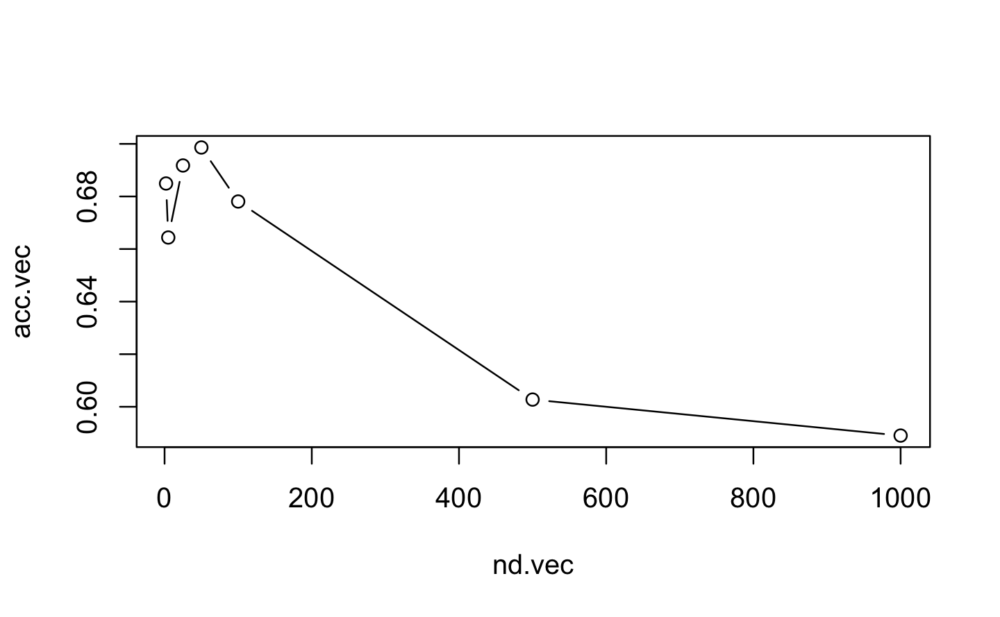

Chapter 8 Supervised learning
In this section, we use supervised learning to develop a classifier of speech. The final aim is to be able to classify a speech from Boris Johnson or Emmanuel Macron. Therefore we are going to combine the dataframe of Boris with the dataframe of Macron. And because we don’t have enough text, we are going to split the text into sentence in order to have enough data.
##Boris Johnson
boris_2<-as_tibble(c(boris9mars,boris12mars,boris16mars,boris18mars,boris19mars,boris20mars,boris22mars)) %>%
rename(
text=value)
author="Boris Johnson"
boris_supervised<- cbind(boris_2, author)
boris_2_sentence<-get_sentences(boris_supervised)
##Emmanuel Macron
Macron_2<-as_tibble(c(macron12march,macron16march,macron13april)) %>%
rename(
text = value)
author="Macron"
macron_supervised<- cbind(Macron_2, author)
macron_2_sentence<-get_sentences(macron_supervised)
##Combine the 2 dataframes
combine <- rbind(boris_2_sentence, macron_2_sentence)
## Tokenization
combine_corpus<-corpus(combine)
combine_tokens<- tokens(combine_corpus, remove_numbers = TRUE, remove_punct = TRUE, remove_symbols = TRUE, remove_separators = TRUE)
##combi Lemmatization
combine_tokens <- tokens_replace(combine_tokens, pattern=hash_lemmas$token, replacement = hash_lemmas$lemma)
## Cleaning
combine_tokens = combine_tokens %>%
tokens_tolower() %>%
tokens_remove(stopwords("english"))
y<-factor(docvars(combine_tokens,"author"))Then, we build the featues. To this aim, we first compute the DTM matrix.
combine.dfm<-dfm(combine_tokens)
combine.dfm
#> Document-feature matrix of: 730 documents, 1,700 features (99.4% sparse) and 3 docvars.
#> features
#> docs morning meeting government's cobr emergency committee
#> text1 1 0 1 1 1 1
#> text2 0 0 0 0 0 0
#> text3 0 0 0 0 0 0
#> text4 0 0 0 0 0 0
#> text5 0 0 0 0 0 0
#> text6 0 0 0 0 0 0
#> features
#> docs coronavirus outbreak first scotland
#> text1 1 1 0 0
#> text2 0 0 3 1
#> text3 0 0 0 0
#> text4 0 0 0 0
#> text5 1 0 0 0
#> text6 0 0 0 0
#> [ reached max_ndoc ... 724 more documents, reached max_nfeat ... 1,690 more features ]8.1 LSA
Because of the huge number of tokens, the feature matrix hence obtained may be too big to train a model in a reasonable amount of time. We thus apply a reduction dimension technoque in order to obtain less feature but still kepp the relevant informations. LSA is perfect to this. As a first trialm we target 30 dimensions ( 30 subjects)
8.2 Random forest
First we need to shape the data in a dataframe. We separate the text into sentence in order to have a more consistent and robust dataframe. Then we call for the training. In this simple context, in order to illustrate the concepts without too long computation times, we will limit ourselves to just one training set and one test set in a 08/02 pattern.
df<-data.frame(Class=y, x=cmod$docs)
index.tr<-sample(size = round(0.8*length(y)),x=c(1:length(y)),replace = FALSE)
df.tr<-df[index.tr,]
df.te<-df[-index.tr,]
combine.fit<-ranger(Class~.,
data = df.tr)
pred.te<-predict(combine.fit,df.te)In order to see the prediction quality of the model, we call the confusionMatrix function in the caret package
confusionMatrix(data=pred.te$predictions,reference = df.te$Class)
#> Confusion Matrix and Statistics
#>
#> Reference
#> Prediction Boris Johnson Macron
#> Boris Johnson 16 2
#> Macron 45 83
#>
#> Accuracy : 0.678
#> 95% CI : (0.596, 0.753)
#> No Information Rate : 0.582
#> P-Value [Acc > NIR] : 0.011
#>
#> Kappa : 0.265
#>
#> Mcnemar's Test P-Value : 8.99e-10
#>
#> Sensitivity : 0.262
#> Specificity : 0.976
#> Pos Pred Value : 0.889
#> Neg Pred Value : 0.648
#> Prevalence : 0.418
#> Detection Rate : 0.110
#> Detection Prevalence : 0.123
#> Balanced Accuracy : 0.619
#>
#> 'Positive' Class : Boris Johnson
#> We see an accuracy of 69.9%. Also a sensitivity of 40.4% and a specificity of 86.2%. The prediction quality is not well balanced between the 2 class. The model struggle to predict the negative class, which is Macron. It is probably because we there is less data of Macron.
8.3 Improving the features
nd.vec<-c(2,5,25,50,100,500,1000)
acc.vec<-numeric(length(nd.vec))
for (j in 1:length(nd.vec)) {
cmod<-textmodel_lsa(combine_corpus.dfm,nd=nd.vec[j])
df<-data.frame(class=y,x=cmod$docs)
df.tr<-df[index.tr,]
df.te<-df[-index.tr,]
combine.fit<-ranger(class~.,
data = df.tr)
pred.te<-predict(combine.fit,df.te)
acc.vec[j]<-confusionMatrix(data=pred.te$predictions,reference = df.te$class)$overall[1]
}
acc.vec
#> [1] 0.685 0.664 0.692 0.699 0.678 0.603 0.589
plot(acc.vec~nd.vec,type="b") We can see that 100 is the best choice among the ones we tried.
combine_corpus.dfm <- dfm(combine_corpus)
cmod<-textmodel_lsa(combine_corpus.dfm,nd=100)
df<-data.frame(class=y, x=cmod$docs)
index.tr<-sample(size = round(0.8*length(y)),x=c(1:length(y)),replace = FALSE)
df.tr<-df[index.tr,]
df.te<-df[-index.tr,]
combine.fit<-ranger(class~.,
data = df.tr)
pred.te<-predict(combine.fit,df.te)
confusionMatrix(data=pred.te$predictions,reference = df.te$class)
#> Confusion Matrix and Statistics
#>
#> Reference
#> Prediction Boris Johnson Macron
#> Boris Johnson 23 5
#> Macron 22 96
#>
#> Accuracy : 0.815
#> 95% CI : (0.742, 0.874)
#> No Information Rate : 0.692
#> P-Value [Acc > NIR] : 0.000538
#>
#> Kappa : 0.516
#>
#> Mcnemar's Test P-Value : 0.002076
#>
#> Sensitivity : 0.511
#> Specificity : 0.950
#> Pos Pred Value : 0.821
#> Neg Pred Value : 0.814
#> Prevalence : 0.308
#> Detection Rate : 0.158
#> Detection Prevalence : 0.192
#> Balanced Accuracy : 0.731
#>
#> 'Positive' Class : Boris Johnson
#> We clearly improve the accruacy in adding more dimensions